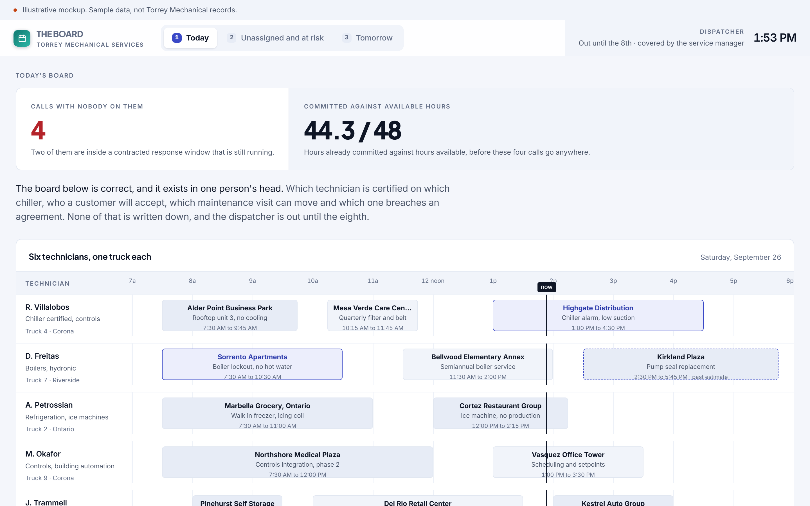
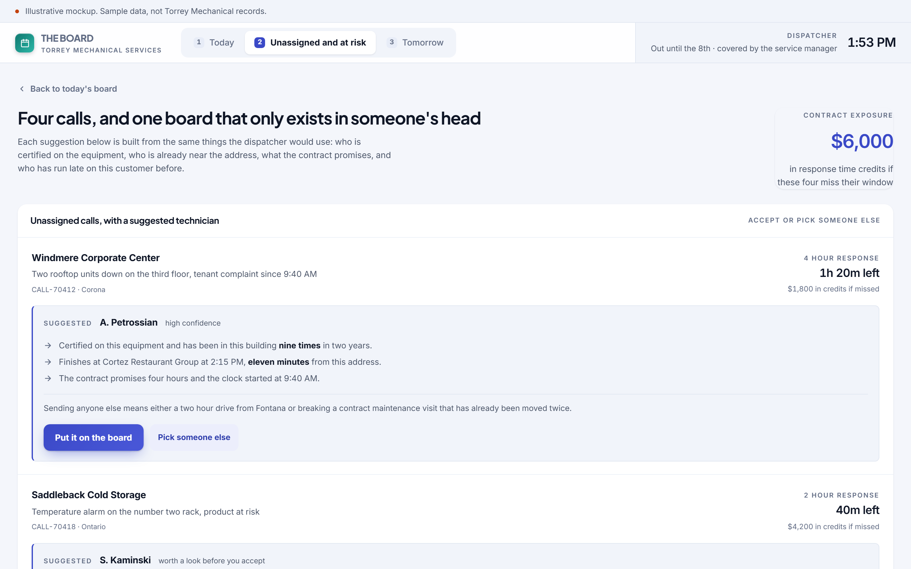
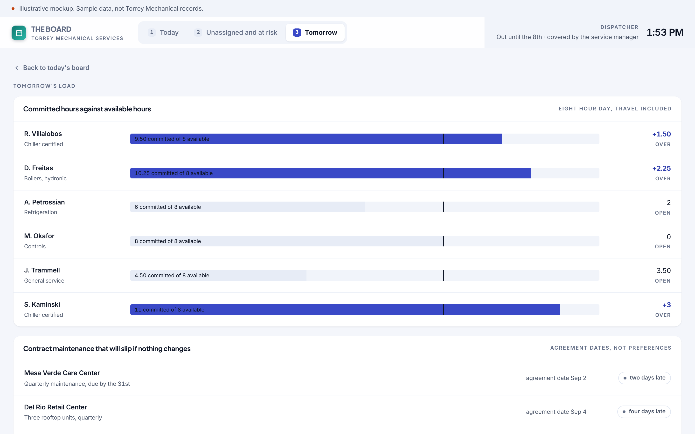
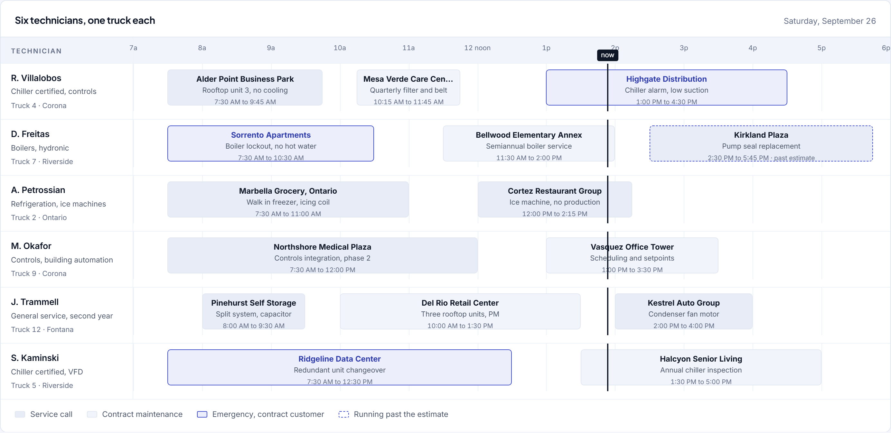
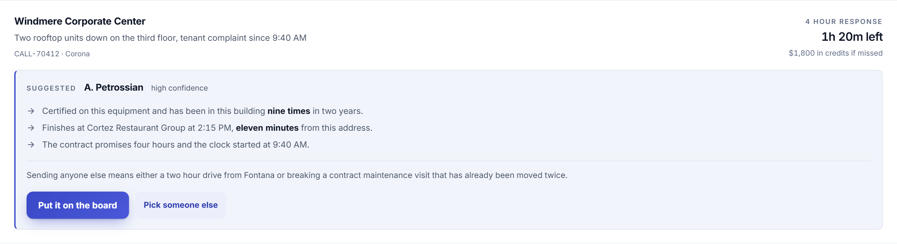
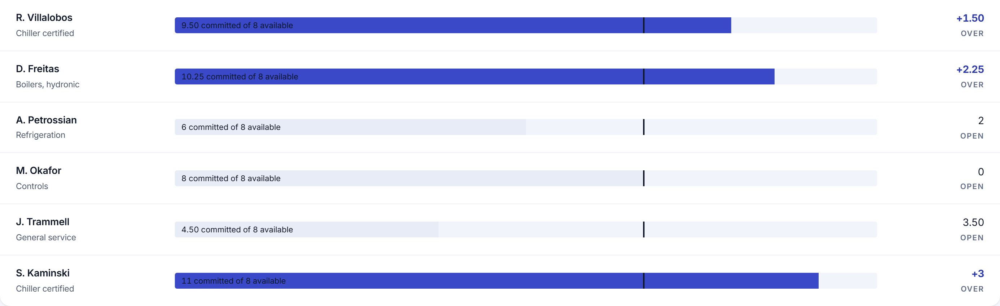

Concept, built to show the software behind a manual role. Not delivered client work.
The schedule breaks the week the dispatcher takes vacation.
Which technician is certified on which chiller, which visit can move, which customer will accept whom. None of it is written down.
The role you would hire for
The role is scheduling and dispatching six technicians, handling emergency calls under contract response windows, coordinating parts, and keeping preventive maintenance visits on their agreement dates. It usually calls for three years in the trade, which is a way of asking for the knowledge nobody wrote down.
The manual process that implies
A whiteboard, a phone, and one person who knows that the customer in Corona will not accept the second year technician, that the Ridgeline chiller needs one of the two certified people, and that the Halcyon visit has already been moved twice. When that person is out, the board still exists and the knowledge does not, so the calls get assigned by whoever is free instead of by who should go.
44.3 / 48
hours already committed before four unassigned calls go anywhere, and the dispatcher is out until the 8th
A dispatcher holds the whole schedule in their head, and the schedule breaks the day they take vacation. The board is correct. The knowledge that produced it is not recorded anywhere.
Three screens
Built to be read in a screenshot, then clicked through by whoever it lands with.



Detail
The three places where this stops being a report and starts being a tool.



What it would take to build for real
The concept is a proposal about the shape of the work. This is the honest version of the rest.
What it reads
The service system for calls, technicians and history, the maintenance agreements for response windows and visit dates, and the certifications that usually live in a binder or in one person's memory.
What it writes
An assignment with the reasoning attached, a maintenance visit that is either scheduled or explicitly at risk, and a record of which technician has been to which building.
What is genuinely hard
Getting the knowledge out of the dispatcher's head without asking them to fill in a form. Most of it can be inferred from the history of who went where and what came back, and the rest is worth an interview.
Shape of the work
Five to seven weeks. Roughly $13,000 to $19,000. The board alone is worth building first, because a schedule someone else can read is most of the value.
Every engagement is staffed with a dedicated team and a named project lead who works directly with the person who owns the process. The software above was built before anyone paid for anything, which is the point.